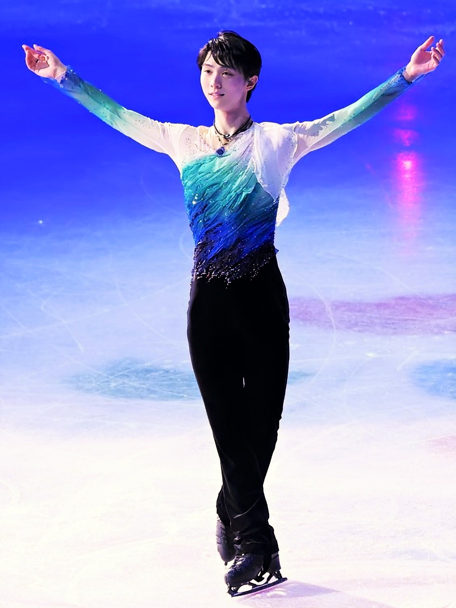
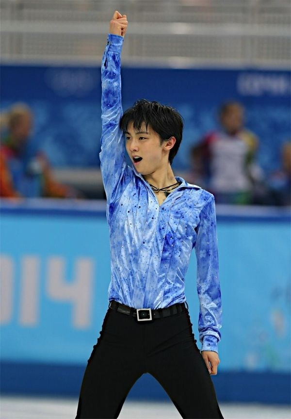
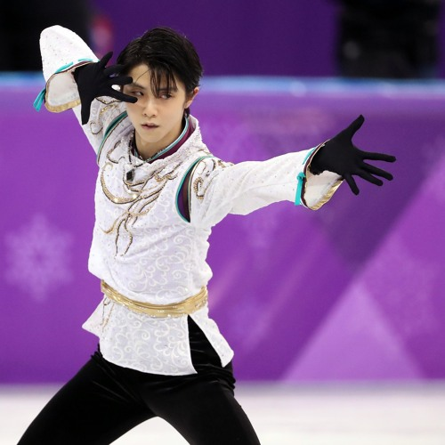

Apresentações

Hope and Legacy
Essa apresentação, foi executada em 2017 no Campeonato Mundial de Patinação Artística no Gelo, no qual Yuzuru foi campeão graças a sua execução perfeita e movimentos complexos.

Parisienne Walkways
Essa apresentação, foi executada em 2014 nos Jogos Olímpicos de Inverno (Souchi,Rússia), no qual Yuzuru ganhou o ouro, quebrando o recode mundial ao ultrapassar 100 pontos.

Seimei
Essa apresentação, foi executada em 2018 nos Jogos Olímpicos de Inverno (Pyongchang, Coreia do Sul), no qual Yuzuru ganhou o ouro tornando-se bicamepaeo mundial.